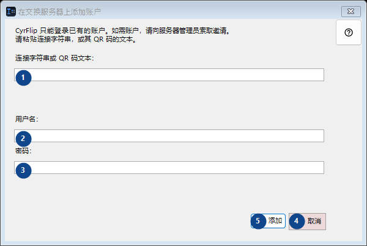
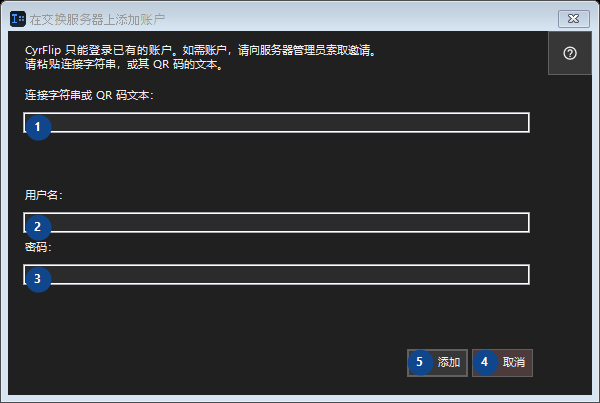

在交换服务器上添加账户
用途
通过您自己的交换服务器，把复制的内容传到您的其他设备上。


使用顺序
阅读编号说明，选择所需值，然后使用窗口命令继续。
界面元素
1. CyrFlip 只能登录已有的账户。如需账户，请向服务器管理员索取邀请。 请粘贴连接字符串，或其 QR 码的文本。
选择或输入旁边标签所指的值。继续前请检查。
你的快捷键2. CyrFlip 只能登录已有的账户。如需账户，请向服务器管理员索取邀请。 请粘贴连接字符串，或其 QR 码的文本。
选择或输入旁边标签所指的值。继续前请检查。
你的快捷键3. CyrFlip 只能登录已有的账户。如需账户，请向服务器管理员索取邀请。 请粘贴连接字符串，或其 QR 码的文本。
选择或输入旁边标签所指的值。继续前请检查。
你的快捷键4. 取消
需要执行上述操作时使用此命令。接受前请阅读确认提示。
你的快捷键5. 添加
需要执行上述操作时使用此命令。接受前请阅读确认提示。
你的快捷键